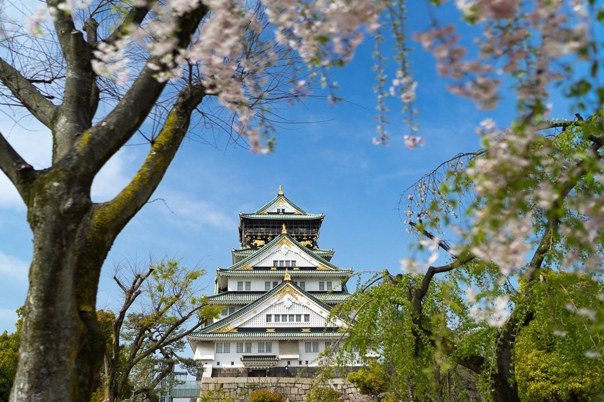
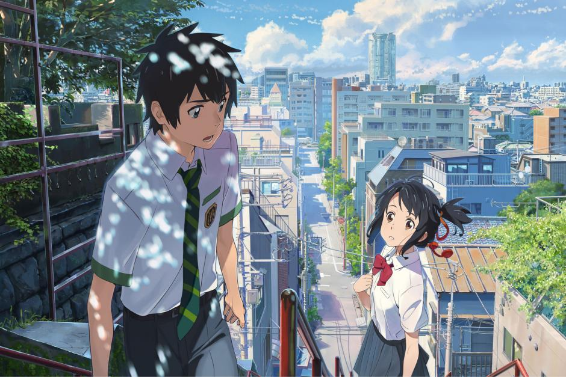

Mein Geburtstag ist am 18.11.05. Ich bin hier in der Schweiz geboren, jedoch ist meine Heimat in Japan. Ich wohne seit der Geburt in Bern. Als ich klein war wollte ich immer Arzt werden, bis ich ein paar Mal geschnuppert habe und gemerkt habe das der beruf doch nicht so für mich ist… Meine Eltern arbeiten als Service und Koch und sind beide in Japan geboren Ich gehe fast jedes Jahr nach Japan, um meine verwandte dort zu sehen. Japan ist auch ein sehr schönes Land.
Es gibt sehr viele Sehenswürdigkeiten. Japan ist auch bekannt für eine einzigartige Landschaft, gutes Essen und sehr liebenswerte, hilfsbereite und herzliche Menschen.

